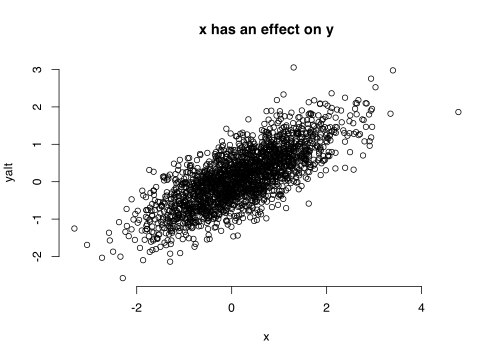
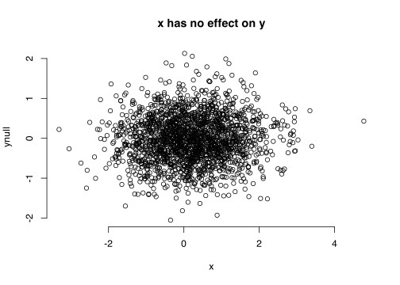

show code
library(qvalue)Temi
September 6, 2023
This post is still under construction; I am adding sutff as I get the time to.
When doing multiple tests, there is a need to control the false positive rate (fpr) because by nature of p-values, if there is nothing interesting going on, you still have an alpha % chance of detecting something, and misclassifying that.
I have a simple linear function here, where \(X\) has some effect, \(\beta\) on \(Y\).
\[ Y \approx \sum X\beta + \epsilon \]
where,
\[ X \approx \mathcal{N}(0.2,1)\ \]
\[ \epsilon \approx \mathcal{N}(0,0.1) \]
ℹ Sourcing gist "d7e37272964e5f00af4efea01d295dc8"
ℹ SHA-1 hash of file is "d308c0c2f4eb3d58cff6b52ad22538f09bd136e0"

Now I can simulate these tests multiple times, say, 10000
[1] 2000 10000[1] 2000 10000[1] 2000 10000[1] 2000 10000 Min. 1st Qu. Median Mean 3rd Qu. Max.
0.0000291 0.2501638 0.4916683 0.4972860 0.7465493 0.9999487 Even under the null, we find that 5% of our tests are false positives! In real life, we would think these are true effects, which is not good.
So, we try to control this false positive rate. There are many methods, but we can use the Bonferroni approach
With Bonferroni correction, we see that all of the tests are null, which is what should have happened in the first place. Anyway, all that was for simulation sake. I should create a set of tests, where some proportion are under the alternative i.e. true, and the rest are not i.e. null
wtrue
0 1
0.8046 0.1954 I will look through wtrue. If 0, I will select the ynull at that index, otherwise, I will select the yalt
[1] 2000 10000 Min. 1st Qu. Median Mean 3rd Qu. Max.
0.0000 0.0678 0.3792 0.3992 0.6825 0.9999 We expect 500 to be significant under the null, but we get 2339.
Since we have more than what we expected under the null, we can assume that the remainder are gotten under the alternative. We can estimate this true discovery rate
\[ \frac{(nobserved - nexpected)}{nobserved} \]
The false discovery rate is 1 - tdr, which in this case is 0.2137666.
All well and good, except that our tdr here is higher than we expect. Instead we can estimate the positive false discovery rate or pFDR. Here’s how I explain this: Given that you have found a number of tests to be significant, let’s call this tsig, and we expect at least one of these to be positive i.e. under the alternative, what is the expected number of false positives? i.e. what proportion are not true but we come out as true.
To break this down a little, I will start from here: Assuming you do a test to classify if a a group of people eat fruits or not, and you have this table after.
| eats fruits | does not eat fruits | ||
|---|---|---|---|
| classified: eat fruits | true positives | false positives | |
| classified: does not eat fruits | false negatives | true negatives | |
The fpr, as mentioned earlier is:
\[ \frac{false\ positives}{(false\ positives\ +\ true\ negatives)} \]
i.e. of all the people who don’t eat fruits, how many of them do we classify to eat fruits based on our tests?
The fdr then is, of all the people who we classify as eating fruits, how many of them don’t actually eat fruits?
\[ \frac{false\ positives}{(true\ positives\ +\ false\ positives)} \]
Using the table + idea above, I can then
| eats fruits | does not eat fruits | ||
|---|---|---|---|
| classified: eat fruits | true positives | false positives | |
| classified: does not eat fruits | false negatives | true negatives | |
Because we simulated the data, we know that 1954 tests are under the alternative, and the rest, 8046, should be under the null. But after our tests, we have found 2339 to be under the alternative and 7661 to be under the null. So, there are some 385 that have been misclassified as under the alternative when they are not, and some -385
Alternatively, table(pvec_mix > 0.05, wtrue) will yield the same result.
| alternative | null | total | |
|---|---|---|---|
| classified: alternative | 1954 | 385 | 2339 |
| classified: null | 0 | 7661 | 7661 |
| total | 1954 | 8046 |
With this, we can estimate the fpr to be 0 and fdr to be 0.
Okay. Back to pfdr. Remember that I described this earlier, saying:
“Given that you have found a number of tests to be significant, let’s call this
tsig, and we expect at least one of these to be positive i.e. under the alternative, what is the expected number of false positives? i.e. what proportion are not true but we come out as true.”